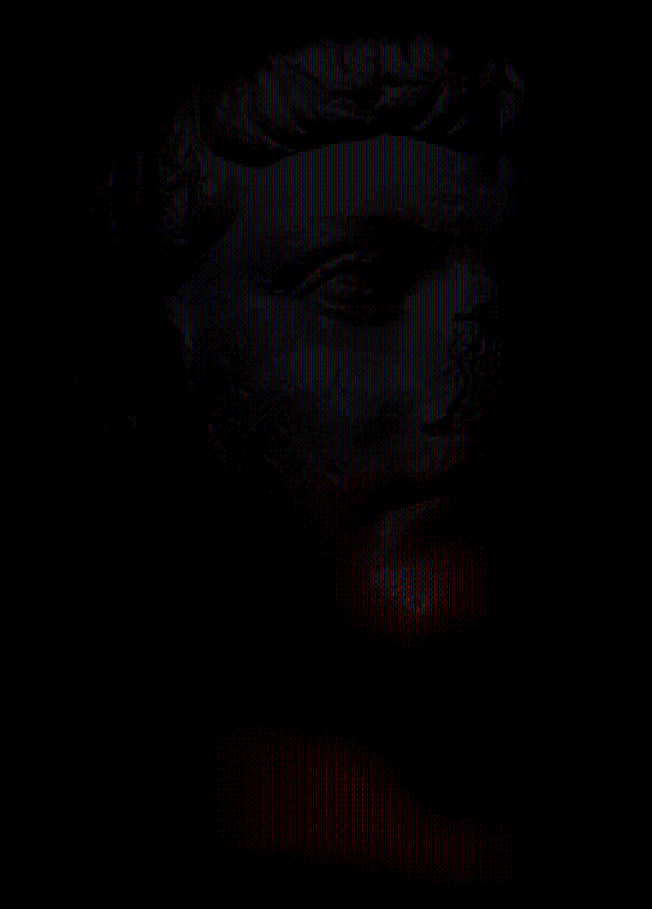

statue 10
--------------------
Technology
isn’t what
makes us
“post-human” or
“transhuman”.
It’s what
makes us human.
Technology
is in our
nature.
Through our
tools we
give our
dreams form.
We bring
them into
the world.
The
practicality
of technology
may distinguish
it from art,
but both
spring from
a similar,
distinctly
human
yearning.
--------------------
The cyberspace
will be
inhabited by
transformed
Exes,
moving and
growing with
a freedom
impossible
for physical
entities.
A good,
or merely
convincing,
idea,
or an entire
personality,
may spread to
neighbors at
the speed
of light.
Boundaries
of personal
identity will
be very fluid,
and ultimately
arbitrary
and subjective,
as
strong and weak
interconnections
between
different regions
rapidly
form and dissolve.
Yet some
boundaries
will persist,
due to distance,
incompatible
ways of thought,
and deliberate choice.
The consequent
competitive
diversity
will allow a
Darwinian evolution
to continue,
weeding out
ineffective ways
of thought,
and fostering
a continuing novelty.
